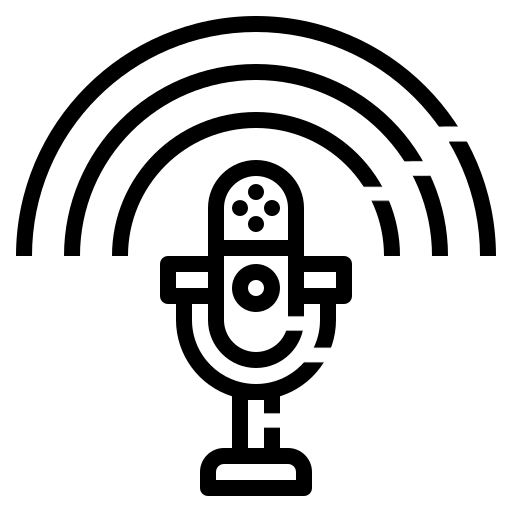

About Me
I am currently completing my Bsc in Computer Science at the University of Sussex, near Brighton. I am a passionate Web and JavaScript developer and a general tech enthusiast. To pay the bills whilst at uni, I took up bartending and now make cocktails for a living at TGI Fridays, Brighton Marina. Outside of work my hobbies include watching films, playing games and listening to the 'How Stuff Works' podcast.


